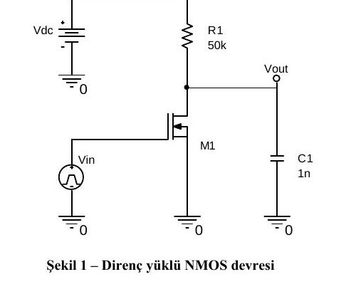
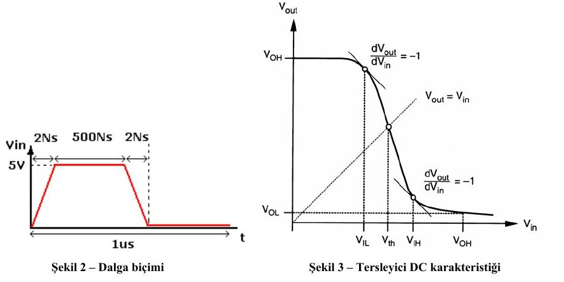
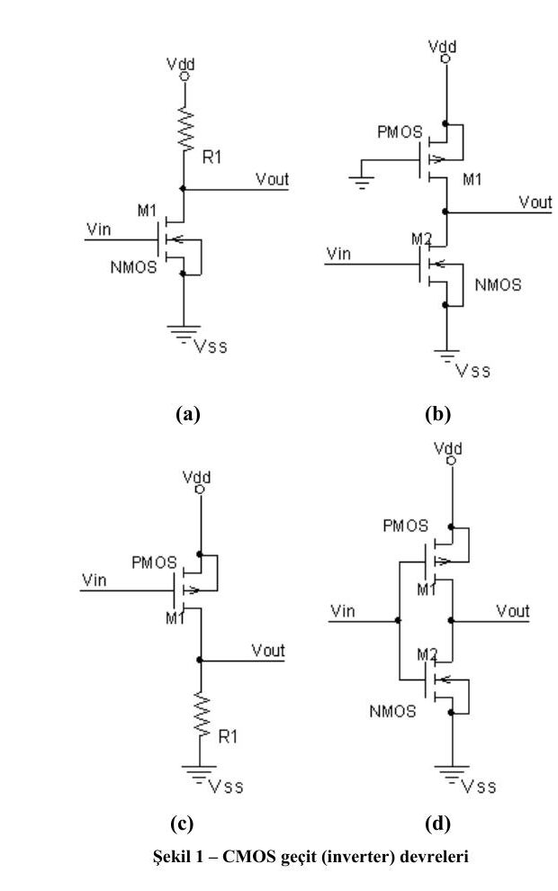
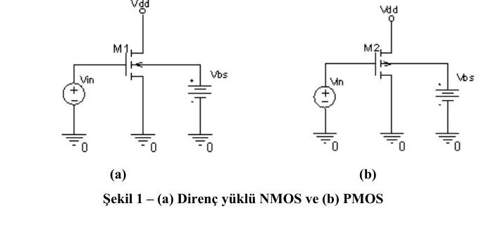

· EEM312
EEM312 Sayısal Elektronik: Yazılım Laboratuvarı Föyleri Y1–Y3 (WinSPICE ile NMOS ve CMOS Tersleyici)
EEM312 – Sayısal Elektronik · 11.03.2011 · 16.10.2026
Bu yazı, Başkent Üniversitesi Elektrik-Elektronik Mühendisliği EEM 312 – Sayısal Elektronik dersinin 2010-2011 bahar yarıyılı yazılım laboratuvarı föylerinin ilk üçünü içeriyor: Y1 (direnç yüklü NMOS ile tersleyici ölçümleri), Y2 (CMOS tersleyici karakteristiği) ve Y3 (NMOS ve PMOS elemanlarının karakteristiklerinin incelenmesi). Deneyler WinSPICE (Spice3) benzetimcisiyle yapılıyordu; föyler Mart 2011 tarihli ve laboratuvar sorumluları Arş. Gör. Numan Yavuz ile Arş. Gör. Evren Emekdaş'tı. Föylerin orijinal PDF'leri yazının sonunda ZIP olarak indirilebilir.
Y1: Direnç yüklü NMOS ile tersleyici ölçümleri
Ön çalışma
- WinSPICE ile birlikte gelen kullanım kılavuzları ve yardım dosyalarından yararlanarak şu işlemlerin nasıl yapılacağını açıklayın ve komut kalıplarını yazın: DC analiz; voltaj kaynağı ve darbe (pulse) biçimli kaynak; geçici durum (transient) analizi; MOSFET bacak bağlantısı ve devrede tanımlanması; grafik çizdirme ve aynı figürde birden çok vektörü üst üste çizdirme; bir vektöre karşı başka bir vektörün grafiği (örneğin V_in'e karşı V_out).
- Şekil 1'deki devre ve Tablo 1'deki parametreler için Spice3 ağ listesini (netlist) oluşturun. Şu parametrelerin tanımlarını yazın ve bunları elde edecek Spice3 komutlarını dosyaya ekleyin (Şekil 3'ten yararlanabilirsiniz): V_OH, V_OL; V_IH, V_IL; V_M; t_f, t_r; t_PHL, t_PLH, t_d; NM_H, NM_L.

Tablo 1: Devre parametreleri
| Parametre | Değer |
|---|---|
| Vin | Şekil 2'deki dalga biçimi |
| Vdc | 5 V |
| R1 | 50 kΩ |
| C1 | 1 pF |
| M1 | L = 5u, W = 10u |
| M1 modeli | .MODEL NMOSFET NMOS(VTO=1 KP=20U GAMMA=0.37 PHI=0.6 CBD=3.1E-15 CBS=3.1E-15) |

Şekil 3'te V_IL ve V_IH, gerilim geçiş eğrisinin eğiminin dV_out/dV_in = −1 olduğu noktalardır; V_M (anahtarlama eşiği) eğrinin V_out = V_in doğrusunu kestiği noktadır.
Not: Şekil 1'de C1 "1n" yazıyor; Tablo 1'de ise 1 pF verilmiş.
Laboratuvar çalışması
- Ön çalışmada hazırladığınız ağ listesini Spice3'te çalıştırın, istenen grafikleri elde edin ve gerekli değerleri grafikten okuyun.
- V_dc'yi 3 V'a düşürüp benzetimi tekrarlayın. Bir önceki sonuçlara göre ne değişti?
- Sonuçları karşılaştırın. Sonuçlar ideal durumdan neden farklıdır? İdeal durumun avantajları nelerdir? Girişe uygulanan V_in sinyalinin ön çalışmadaki parametrelere etkisi nedir?
Y2: CMOS tersleyici karakteristiği
Laboratuvar çalışması
Madde 1. Şekil 1'de dört farklı tersleyici yapısı var. Her biri için VTC (gerilim geçiş karakteristiği) eğrisini benzetimle elde edin ve Tablo 1'i doldurun. V_dd = 3,1 V, V_ss = 0 V, yük 1 fF, R1 = 100 kΩ. VTC için girişe darbe kaynağı bağlanıp bu kaynak üzerinde DC analiz yapılır.

Föyde hatırlatma olarak verilen model ve kontrol satırları:
.MODEL MOSN NMOS LEVEL=2 LD=0.15U TOX=200.0E-10
+ NSUB=5.36726E+15 VTO=0.743469 KP=8.00059E-05 GAMMA=0.543
+ PHI=0.6 U0=655.881 UEXP=0.157282 UCRIT=31443.8
+ DELTA=2.39824 VMAX=55260.9 XJ=0.25U LAMBDA=0.0367072
+ NFS=1E+12 NEFF=1.001 NSS=1E+11 TPG=1.0 RSH=70.00
+ CGDO=4.3E-10 CGSO=4.3E-10 CJ=0.0003 MJ=0.6585
+ CJSW=8.0E-10 MJSW=0.2402 PB=0.58
.MODEL MOSP PMOS LEVEL=2 LD=0.15U TOX=200.0E-10
+ NSUB=4.3318E+15 VTO=-0.738861 KP=2.70E-05 GAMMA=0.58
+ PHI=0.6 U0=261.977 UEXP=0.323932 UCRIT=65719.8
+ DELTA=1.79192 VMAX=25694 XJ=0.25U LAMBDA=0.0612279
+ NFS=1E+12 NEFF=1.001 NSS=1E+11 TPG=-1.0 RSH=120.6
+ CGDO=4.3E-10 CGSO=4.3E-10 CJ=0.0005 MJ=0.5052
+ CJSW=1.349E-10 MJSW=0.2417 PB=0.64
* Örnek eş büyüklükteki mosfet tanımlamaları
M1 D G S B MOSN W=1.8u L=1.2u NRS=0.333 NRD=0.333
+ AD=6.5p PD=9.0u AS=6.5p PS=9.0u
M1 D G S B MOSP W=1.8u L=1.2u NRS=0.333 NRD=0.333
+ AD=6.5p PD=9.0u AS=6.5p PS=9.0u
* DIKKAT! : Nmos ile Pmos tanımlamasında drain ve source
* tanımlamasına dikkat edin
* Girişe uygulanan dalga kaynağı (madde 2'de verilen değerlere göre doldurun)
VIN N1 N2 pulse (v1 v2 td tr tf pw per)
....
.control
....
dc VIN Vin- Vin+ step_voltage
....
.endcTablo 1 (DC analiz sonuçları): (a)–(d) devreleri için V_OH, V_OL, V_IH, V_IL, V_M, NM_H, NM_L.
Madde 2. DC analizi kaldırıp geçici durum analizi yapın; darbenin periyodu 10 ns, t_r = t_f = 1 ns. Tablo 2: her devre için t_r, t_f, t_pLH, t_pHL, t_d. Madde 3. Tablo 1 ve 2'ye göre: (a) Hangi devre en iyi tersleyicidir, neden? (b) Devreler simetrik midir? Değilse simetrik olması için hangi parametreler değişmelidir? Madde 4. Aşağıda büyüklükleri eşit olmayan NMOS ve PMOS tanımları var. L ve W'ye göre kıyaslayın, büyüklüklerin neden böyle seçildiğini model parametreleriyle ispatlayın; Şekil 1-d'nin ağ listesini güncelleyip VTC'yi yeniden elde ederek değerlendirin.
M1 D G S B MOSN W=1.8u L=1.2u NRS=0.333 NRD=0.333
+ AD=6.5p PD=9.0u AS=6.5p PS=9.0u
M1 D G S B MOSP W=5.4u L=1.2u NRS=0.111 NRD=0.111
+ AD=16.2p PD=11.4u AS=16.2p PS=11.4uBuradaki PMOS'un genişliği NMOS'un üç katıdır (5,4u / 1,8u). Modelde KP_n / KP_p = 8,00059E-05 / 2,70E-05 ≈ 2,96 olduğundan, PMOS'u yaklaşık 3 kat geniş almak iki transistörün akım sürme yeteneğini eşitler; böylece eğri simetrikleşir ve anahtarlama eşiği V_M, V_dd/2'ye yaklaşır.
Y3: NMOS ve PMOS elemanlarının karakteristikleri
Ön çalışma
Şu terimleri ayrıntılı olarak açıklayın: doyma akımı (saturation current), kanal boyu modülasyonu (channel length modulation), hız doyumu (velocity saturation), sıcak taşıyıcı etkisi (hot carrier effect), metal göçü (metal migration), CMOS mandallama (CMOS latchup).
Laboratuvar çalışması
Madde 1. Şekil 1'deki direnç yüklü NMOS ve PMOS devreleri için, aşağıdaki 1u teknolojisi Level 3 modelleriyle Spice ağ listesini oluşturun. Şekildeki V_dd kaynağı MOSFET akımını ölçmek için kullanılabilir.

.MODEL NMOS NMOS LEVEL = 3
+ TOX = 200E-10 NSUB = 1E17 GAMMA = 0.5
+ PHI = 0.7 VTO = 0.8 DELTA = 3.0
+ UO = 650 ETA = 3.0E-6 THETA = 0.1
+ KP = 120E-6 VMAX = 1E5 KAPPA = 0.3
+ RSH = 0 NFS = 1E12 TPG = 1
+ XJ = 500E-9 LD = 100E-9
+ CGDO = 200E-12 CGSO = 200E-12 CGBO = 1E-10
+ CJ = 400E-6 PB = 1 MJ = 0.5
+ CJSW = 300E-12 MJSW = 0.5
.MODEL PMOS PMOS LEVEL = 3
+ TOX = 200E-10 NSUB = 1E17 GAMMA = 0.6
+ PHI = 0.7 VTO = -0.9 DELTA = 0.1
+ UO = 250 ETA = 0 THETA = 0.1
+ KP = 40E-6 VMAX = 5E4 KAPPA = 1
+ RSH = 0 NFS = 1E12 TPG = -1
+ XJ = 500E-9 LD = 100E-9
+ CGDO = 200E-12 CGSO = 200E-12 CGBO = 1E-10
+ CJ = 400E-6 PB = 1 MJ = 0.5
+ CJSW = 300E-12 MJSW = 0.5Örnek tanımlar ve kontrol satırları:
* Örnek eş büyüklükteki MOSFET tanımlamaları
M1 D G S B MOSN W=1.8u L=1.2u NRS=0.333 NRD=0.333
+ AD=6.5p PD=9.0u AS=6.5p PS=9.0u
M2 D G S B MOSP W=1.8u L=1.2u NRS=0.333 NRD=0.333
+ AD=6.5p PD=9.0u AS=6.5p PS=9.0u
* V1=0, V2=5V, td=0, tr=tf=1n, pw=50n, per=100n
VIN N1 N2 pulse (v1 v2 td tr tf pw per)
....
.control
Alter M1 L=1u
...
* Vdd'nin her degeri için VIN değer aralığında tarama (sweep) işlemi gerçekleştir
dc VIN 0 5 0.1 Vdd 0 5 0.5
...
.endcTablo 3: Benzetim grafikleri ve sorular
| Tip | Grafik | Sabitler / değişkenler | Sorular |
|---|---|---|---|
| NMOS | I_DS – V_DS | V_BS = 0, V_GS = 0–5 V, V_DS = 0–5 V | Kanal boyu modülasyonunun etkisi gözleniyor mu? |
| NMOS | I_DS – V_GS | V_SB = 0–5 V, V_GS = 0–5 V, V_DS = 5 V | Gövde (body) etkisi gözleniyor mu? V_BS pozitif olursa ne olur? |
| NMOS | I_DS – V_DS | V_SB = 0, V_GS = 2 V, W = 1,8u / 3,6u / 7,2u (Alter ile), V_DS = 0–5 V | Akımdaki değişim gözleniyor mu? |
| PMOS | I_DS – V_DS | V_SB = 0, V_SG = 0–5 V, V_DS = 0–5 V | Kanal boyu modülasyonunun etkisi gözleniyor mu? |
| PMOS | I_DS – V_GS | V_SB = 0–5 V, V_SG = 0–5 V, V_DS = 5 V | Gövde etkisi gözleniyor mu? V_BS pozitif olursa ne olur? |
| PMOS | I_DS – V_DS | V_BS = 0, V_SG = 2 V, W = 1,8u / 3,6u / 7,2u, V_DS = 0–5 V | Akım neden değişiyor? |
Madde 2. Föyde verilen 0,18u teknolojisi NMOS modeliyle (Tablo 5; LEVEL = 49, VERSION = 3.1, VTH0 = 0.3999, TOX = 4.E-09, VSAT = 1.38E+05 …; tam model föyde) Şekil 1(a) için Tablo 4'teki benzetimleri yapın. L ve W dışındaki alan ve çevre parametrelerini boş bırakın: bunların etkisi nedir, hangi analizlerde fark yaratır?
Tablo 4:
| Model | Grafik | Değişkenler | Sorular |
|---|---|---|---|
| BSIM3 NMOS, L = 1u, W = 90u | I_DS – V_DS | V_BS = 0, V_GS = 0,2–2 V, V_DS = 0–2 V | Hız doyumu etkisi gözleniyor mu? MOSFET'lerin W'leri neden eşit alınmamış? |
| BSIM4 NMOS, L = 0,18u, W = 5u | I_DS – V_DS | V_BS = 0, V_GS = 0,2–2 V, V_DS = 0–2 V | Sonuçları karşılaştırarak yorumlayın. |
Not: Föyde 0,18u modeli başlıkta "BSIM4" diye anılıyor; ancak tanımdaki LEVEL = 49 ve VERSION = 3.1 aslında BSIM3v3 modeline karşılık gelir (Tablo 4'ün ilk satırında da "BSIM3" yazıyor).